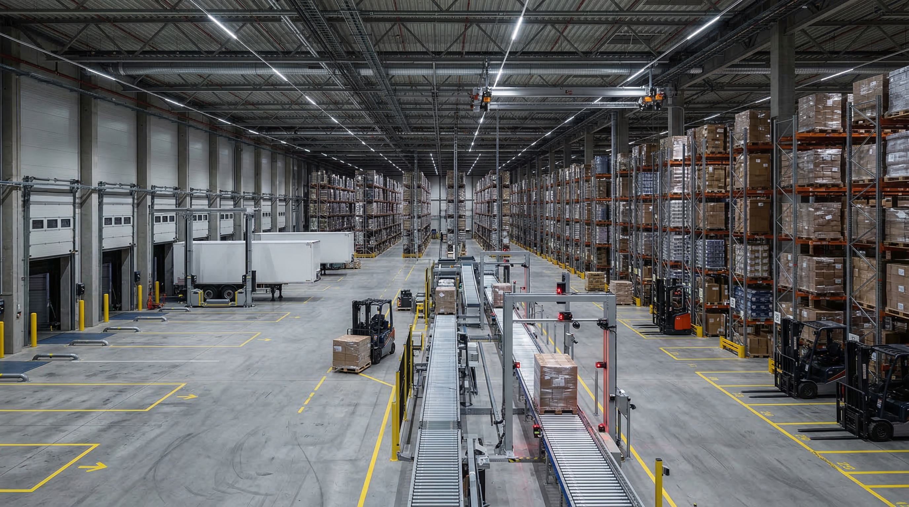

01
Air Freight Orchestration
時間優先貨物向けの航空輸送設計。予約、搬入、通関、国内配送までを一気通貫で整えます。
For
高単価 / 緊急補充 / 試作品
Focus
リードタイム短縮と納品時刻管理

Service Architecture
航空、海上、倉庫、通関、可視化、例外処理の6領域を一つの運用線として整理し、最適な輸送回廊を組みます。
Typical Scope
3-8週
現状診断から回廊再設計まで
15分
緊急アラートへの初動SLA
時間優先貨物向けの航空輸送設計。予約、搬入、通関、国内配送までを一気通貫で整えます。
For
高単価 / 緊急補充 / 試作品
Focus
リードタイム短縮と納品時刻管理
海上輸送をベースに、港湾事情、DC在庫、欠品リスクを見ながら費用対効果を最大化します。
For
定常輸入 / 大型ロット / 長距離回廊
Focus
在庫回転と輸送原価の均衡
入庫、保管、ピッキング、出荷、返品まで、倉庫運用を指標で回る状態へ標準化します。
For
EC / 卸 / 多拠点在庫
Focus
在庫精度と出荷品質の平準化
追跡と例外対応を別物にせず、遅延兆候の検知から再手配判断までを同じラインで管理します。
For
遅延多発 / 温度管理 / 複雑通関
Focus
初動速度と再配車判断
Delivery Flow
Step 1
現状診断
対象回廊、輸送量、在庫構造、遅延要因を整理します。
Step 2
回廊再設計
輸送モード、ハブ、通関導線、在庫配置を組み直します。
Step 3
運用定着
KPIと例外処理フローを定め、現場運用まで落とし込みます。